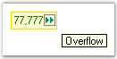
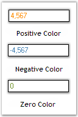

The following Editors controls (DoubleTextBox, IntegerTextBox, PercentTextBox, and CurrencyTextBox) have been revamped, click here to see the details of revamping.
This section discusses the display settings of the IntegerTextBox control.
The IntegerTextBox provides a list of properties to set the display characteristics associated with the integer value.
|
IntegerTextBox Properties |
Description |
|
NumberGroupSeparator |
Gets / sets the separator to be used for grouping the digits. |
|
NumberGroupSizes |
Specifies the grouping of number digits in the IntegerTextBox. |
|
NumberNegativePattern |
Gets / sets the pattern to use when the value is negative. |
|
NegativeSign |
Gets / sets the sign that is to be used to indicate a negative value. |
The grouping size of the number digits can be set using the Int32 Collection Editor which will be displayed on selecting theNumberGroupSizes property in the property grid.
|
[C#]
this.integerTextBox1.NumberGroupSeparator = "/"; this.integerTextBox1.NumberGroupSizes = new int[] { 5 }; this.integerTextBox1.NumberNegativePattern = 2; this.integerTextBox1.NegativeSign = "-"; |
|
[VB.NET]
Me.integerTextBox1.NumberGroupSeparator = "/" Me.integerTextBox1.NumberGroupSizes = New Integer() {5} Me.integerTextBox1.NumberNegativePattern = 2 Me.integerTextBox1.NegativeSign = "-" |
Figure 463: Display Settings of IntegerTextBox
A Sample which demonstrates the Display Settings of IntegerTextBox control is available in the below sample installation path.
..My Documents\Syncfusion\EssentialStudio\Version Number\Windows\Tools.Windows\Samples\2.0\Editors Package\EditorControls
The various values of the IntegerTextBox control and their settings are given below.
|
IntegerTextBox Properties |
Description |
|
IntegerValue |
Specifies the integer value of the text. |
|
DefaultValue |
Specifies the default value. The default value is set to 'Null'. |
|
BindableValue |
Wrapper property that indicates the value. This property can be used to set the value of the control to 'Null'. |
|
[C#]
this.integerTextBox1.IntegerValue = ((long)(777)); this.integerTextBox1.DefaultValue = 0; this.integerTextBox1.BindableValue = 777; |
|
[VB.NET]
Me.integerTextBox1.IntegerValue = (CLng(777)) Me.integerTextBox1.DefaultValue = 0 Me.integerTextBox1.BindableValue = 777 |
Figure 464: Integer Value Set
Null Value Settings
There are various settings that can be applied to the IntegerTextBox control when the value of the control is set to 'Null'. These settings are illustrated below.
|
IntegerTextBox Properties |
Description |
|
NullString |
Specifies the string to be displayed when the DecimalValue is Null. |
|
NullFormat |
Returns the NumberFormatInfo object for the null display. |
|
IsNull |
Specifies the Null State of the Control. |
|
AllowNull |
Specifes whether the control can be Nulled, Null String will be set when the control becomes null. |
|
[C#]
this.integerTextBox1.NullString = "Null Value"; this.integerTextBox1. AllowNull = true; |
|
[VB.NET]
Me.integerTextBox1.NullString = "Null Value" Me.integerTextBox1. AllowNull = True |
Figure 465: Null String Set
Min and Max Value Settings
The minimum and maximum values of the IntegerTextBox can be set using the below given properties.
|
IntegerTextBox Properties |
Description |
|
MaxValue |
Gets / sets the maximum value that can be set through the IntegerTextBox. The default value is set to '9223372036854775807'. |
|
MinValue |
Gets / sets the minimum value that can be set through the IntegerTextBox. The default value is set to '-9223372036854775808'. |
|
[C#]
this.integerTextBox1.MaxValue = 9223372036854775807; this.integerTextBox1.MinValue = -9223372036854775808; |
|
[VB.NET]
Me.integerTextBox1.MaxValue = 9223372036854775807 Me.integerTextBox1.MinValue = -9223372036854775808 |
This section discusses the culture settings of the IntegerTextBox control.
|
IntegerTextBox Properties |
Description |
|
Culture |
Gets / sets the culture that is to be used for formatting the numeric display. |
|
CurrentCultureRefresh |
Indicates whether the Culture property is to be refreshed when the culture changes. |
|
SpecialCultureValue |
Gets / sets the mode for the cultures.
It includes the below given options.
None, CurrentCulture, UICulture and InstalledCulture. |
|
UseUserOverride |
Specifies if the NumberFormatInfo used for formatting will use the User Overrides for the culture. The default value is set to 'True'. |
|
[C#]
this.integerTextBox1.Culture = new System.Globalization.CultureInfo("ar-SA"); this.integerTextBox1.CurrentCultureRefresh = true; this.integerTextBox1.SpecialCultureValue = Syncfusion.Windows.Forms.Tools.SpecialCultureValues.None; this.integerTextBox1.UseUserOverride = true; |
|
[VB.NET]
Me.integerTextBox1.Culture = New System.Globalization.CultureInfo("ar-SA") Me.integerTextBox1.CurrentCultureRefresh = True Me.integerTextBox1.SpecialCultureValue = Syncfusion.Windows.Forms.Tools.SpecialCultureValues.None Me.integerTextBox1.UseUserOverride = True |
Figure 466: Culture Set for the PercentTextBox Control
 Note: The RefreshCulture() method
can be used to refresh and reapply the culture specific settings.
Note: The RefreshCulture() method
can be used to refresh and reapply the culture specific settings.
A Sample which demonstrates the Culture Settings of the IntegerTextBox control is available in the below sample installation path.
..My Documents\Syncfusion\EssentialStudio\Version Number\Windows\Tools.Windows\Samples\2.0\Editors Package\EditorControls
This section discusses the text settings of the
IntegerTextBox control.
The text associated with the IntegerTextBox control can be set and customized using the below given settings.
|
IntegerTextBox Properties |
Description |
|
Text |
Specifies the text associated with the control. |
|
TextAlign |
Indicates how the text should be aligned for edit controls. |
|
SelectedText |
Gets / sets the selected text in the IntegerTextBox. |
|
SelectAllOnFocus |
Specifies if the text should be selected when the control gets the focus. |
|
ClipText |
Returns the clipped text without the formatting. |
|
[C#]
this.integerTextBox1.TextAlign = System.Windows.Forms.HorizontalAlignment.Center; this.integerTextBox1.SelectedText = "-12345678"; this.integerTextBox1.SelectAllOnFocus = true; this.integerTextBox1.ClipText = "12"; |
|
[VB.NET]
Me.integerTextBox1.TextAlign = System.Windows.Forms.HorizontalAlignment.Center Me.integerTextBox1.SelectedText = "-12345678" Me.integerTextBox1.SelectAllOnFocus = true Me.integerTextBox1.ClipText = "12" |
Figure 467: Text Aligned to the "Center"
Figure 468: "SelectAllOnFocus" property Set
The methods associated with the above properties are given below.
|
Methods |
Description |
|
GetClipText |
Gets / sets the clipped text without the formatting. |
|
Cut |
Cuts the selected data to the clipboard. |
|
Copy |
Copies the content of the NumberTextBox to the clipboard. The ClipMode property dictates what gets copied. |
|
Delete |
Deletes the current selection of the TextBox. |
|
Paste |
Pastes the data in the clipboard into the NumberTextBox control. |
|
SelectAll |
Selects all text in the TextBox. |
Clip Mode
The formatting for the text can be enabled or disabled by using the property given below.
|
IntegerTextBox Property |
Description |
|
ClipMode |
Determines whether to include or exclude the literal characters in the input mask when doing a copy command.
It includes the below given options:
IncludeFormatting and ExcludeFormatting. |
|
[C#]
this.integerTextBox1.ClipMode = Syncfusion.Windows.Forms.Tools.CurrencyClipModes.IncludeFormatting; |
|
[VB.NET]
Me.integerTextBox1.ClipMode = Syncfusion.Windows.Forms.Tools.CurrencyClipModes.IncludeFormatting |
Formatted Text
Formatted text can be displayed using the below given property.
|
IntegerTextBox Property |
Description |
|
FormattedText |
Returns the formatted text with the formatting. |
|
[C#]
this.integerTextBox1.FormattedText = "Hello"; |
|
[VB.NET]
Me.integerTextBox1.FormattedText = "Hello" |
RightToLeft
The text can be displayed from right to left for RTL languages using this property.
|
IntegerTextBox Property |
Description |
|
RightToLeft |
Indicates whether the component should draw right-to-left for RTL languages. The default value is set to 'False'. |
Note: The RightToLeft property
will be automatically set to 'True' for RTL languages.
|
[C#]
this.integerTextBox1.RightToLeft = System.Windows.Forms.RightToLeft.Yes; |
|
[VB.NET]
Me.integerTextBox1.RightToLeft = System.Windows.Forms.RightToLeft.Yes |
Figure 469: Text displayed from Right To Left
Note: The ResetRightToLeft() method
can be used to reset the RightToLeft property to it's default
value.
OverflowIndicatorToolTipText
|
IntegerTextBox Properties |
Description |
|
OverflowIndicatorToolTipText |
Specifies the overflow indicator tooltip text. |
|
ShowOverflowIndicator |
Gets / sets overflow indicator visibility. |
|
ShowOverflowIndicatorToolTip |
Indicates whether to show the overflow indicator tooltip. |
|
[C#]
this.integerTextBox1.OverflowIndicatorToolTipText = "Overflow"; this.integerTextBox1.ShowOverflowIndicator = true; this.integerTextBox1.ShowOverflowIndicatorToolTip = true; |
|
[VB.NET]
Me.integerTextBox1.OverflowIndicatorToolTipText = "Overflow" Me.integerTextBox1.ShowOverflowIndicator = True Me.integerTextBox1.ShowOverflowIndicatorToolTip = True |

Figure 470: Overflow Indicator ToolTip Text Set
A Sample which demonstrates the Text, Text Align and Overflow Indicator features of the IntegerTextBox control is available in the below sample installation path.
..My Documents\Syncfusion\EssentialStudio\Version Number\Windows\Tools.Windows\Samples\2.0\Editors Package\EditorControls
The IntegerTextBox control can display banner text in the text field, at run time. A BannerTextProvider Component should be available for this purpose. Also, we need to set AllowNull, NullString and Text properties as below, to make this feature effective.
|
[C#]
this.integerTextBox1.AllowNull = true; this.integerTextBox1.NullString = ""; this.integerTextBox1.Text = ""; |
|
[VB.NET]
Me.integerTextBox1.AllowNull = True Me.integerTextBox1.NullString = "" Me.integerTextBox1.Text = "" |
3.3.8.4.3.5.1 Background Settings
The background settings of the IntegerTextBox control are discussed below.
Background Color
The background color of the control can be set using the properties given below.
|
IntegerTextBox Properties |
Description |
|
BackColor |
Specifies the background color of the component. |
|
ReadOnlyBackColor |
Specifies the backcolor to be used when the control is in the ReadOnly mode. |
|
[C#]
this.integerTextBox1.BackColor = System.Drawing.Color.PeachPuff;
this.integerTextBox1.ReadOnly = true; this.integerTextBox1.ReadOnlyBackColor = System.Drawing.Color.LavenderBlush; |
|
[VB.NET]
Me.integerTextBox1.BackColor = System.Drawing.Color.PeachPuff
Me.integerTextBox1.ReadOnly = True =Me.integerTextBox1.ReadOnlyBackColor = System.Drawing.Color.LavenderBlush |
Figure 471: IntegerTextBox with Background Color Set
Figure 472: "ReadOnlyBackColor" property Set
Note: The ReadOnly property
must be set to 'True' for the above setting to take effect.
The methods associated with the above properties are given below.
|
Methods |
Description |
|
ResetBackColor |
Resets the BackColor property to it's default value. |
|
ResetReadOnlyBackColor |
Resets the ReadOnlyBackColor property to it's default value. |
3.3.8.4.3.5.2 Foreground Settings
The foreground settings of the IntegerTextBox control are discussed below.
Foreground Color
The foreground color of the control can be set using the properties given below.
|
IntegerTextBox Properties |
Description |
|
PositiveColor |
Gets / sets the forecolor when the current value is positive. |
|
NegativeColor |
Gets / sets the forecolor when the current value is negative. The default value is set to 'Red'. |
|
ZeroColor |
Gets / sets the forecolor, when the current value is zero. |
|
[C#]
this.integerTextBox1.PositiveColor = System.Drawing.Color.DarkOrange; this.integerTextBox1.NegativeColor = System.Drawing.Color.SteelBlue; this.integerTextBox1.ZeroColor = System.Drawing.Color.OliveDrab; |
|
[VB.NET]
Me.integerTextBox1.PositiveColor = System.Drawing.Color.DarkOrange Me.integerTextBox1.NegativeColor = System.Drawing.Color.SteelBlue Me.integerTextBox1.ZeroColor = System.Drawing.Color.OliveDrab |

Figure 473: Foreground Settings of IntegerTextBox
The methods associated with the above properties are given below.
|
Methods |
Description |
|
ResetForeColor |
Resets the forecolor of the control to it's default value. |
|
ResetPositiveColor |
Resets the PositiveColor property to it's default value. |
|
ResetNegativeColor |
Resets the NegativeColor property to it's default value. |
|
ResetZeroColor |
Resets the ZeroColor property to it's default value. |
|
SetControlColor |
Sets the forecolor of the control depending on whether the current value is negative. |
|
ShouldSerializePositiveColor |
Serializes the PositiveColor property. |
|
ShouldSerializeNegativeColor |
Serializes the NegativeColor property. |
|
ShouldSerializeZeroColor |
Serializes the ZeroColor property. |
A sample which demonstrates the Foreground Settings of IntegerTextBox control is available in the below sample installation path.
..My Documents\Syncfusion\EssentialStudio\Version Number\Windows\Tools.Windows\Samples\2.0\Editors Package\EditorControls
The behavior settings of the IntegerTextBox control are discussed below.
Negative Key Settings
The integer value of the IntegerTextBox can be reset or changed to a negative value using the properties given below.
|
IntegerTextBox Properties |
Description |
|
DeleteSelectionOnNegative |
This property defines the behavior when the contents of the IntegerTextBox is fully selected and the negative key is pressed by the user.
When set to 'True', the current value is replaced by the default value.
When set to 'False', the current value is changed to the negative value immediately. |
|
NegativeInputPendingOnSelectAll |
This property defines the behavior when the contents of the IntegerTextBox is fully selected and the negative key is pressed by the user.
When set to 'True', the current value is not changed at all. The next key stroke is taken to be a new value and the entire contents of the IntegerTextBox is replaced by the negative value of the key stroke character entered.
When set to 'False', the current value is changed to the negative value immediately. |
|
[C#]
this.integerTextBox1.DeleteSelectionOnNegative = true; this.integerTextBox1.NegativeInputPendingOnSelectAll = true; |
|
[VB.NET]
Me.integerTextBox1.DeleteSelectionOnNegative = True Me.integerTextBox1.NegativeInputPendingOnSelectAll = True |
AllowLeadingZeros
This property can be used to include zeros before the beginning value of the integer value of the control.
|
IntegerTextBox Property |
Description |
|
AllowLeadingZeros |
Indicates whether to allow insets zero in the beginning value. The default value is set to 'False'. |
|
[C#]
this.integerTextBox1.AllowLeadingZeros = true; |
|
[VB.NET]
Me.integerTextBox1.AllowLeadingZeros = True |
Figure 474: Zeros inserted before the Beginning Value
Color and Styles can be applied to the border of the IntegerTextBox control as discussed below.
|
IntegerTextBox Properties |
Description |
|
Border3DStyle |
Indicates the style of the 3D border. The options included are as follows:
RaisedOuter, SunkenOuter, RaisedInner, SunkenInner, Raised, Etched, Bump, Sunken, Adjust and Flat.
The default value is set to 'Sunken'. |
|
BorderColor |
Specifies the color of the 2D border. |
|
BorderSides |
Indicates the border sides of the panel. The options are as follows.
Left, Top, Right, Bottom, Middle and All. |
|
BorderStyle |
Indicates whether the edit control should have a border. The options included are given below:
FixedSingle, Fixed3D and None. |
|
[C#]
this.integerTextBox1.Border3DStyle = System.Windows.Forms.Border3DStyle.Bump; this.integerTextBox1.BorderColor = System.Drawing.Color.Red; this.integerTextBox1.BorderSides = System.Windows.Forms.Border3DSide.All; this.integerTextBox1.BorderStyle = System.Windows.Forms.BorderStyle.FixedSingle; |
|
[VB.NET]
Me.integerTextBox1.Border3DStyle = System.Windows.Forms.Border3DStyle.Bump Me.integerTextBox1.BorderColor = System.Drawing.Color.Red Me.integerTextBox1.BorderSides = System.Windows.Forms.Border3DSide.All Me.integerTextBox1.BorderStyle = System.Windows.Forms.BorderStyle.FixedSingle |
Figure 475: IntegerTextBox with Border Set
A sample which demonstrates the Border Settings of IntegerTextBox control is available in the below sample installation path.
..My Documents\Syncfusion\EssentialStudio\Version Number\Windows\Tools.Windows\Samples\2.0\Editors Package\EditorControls
Sometimes there may be some situation for entering large values, like in Mega, Kilo etc., In such situations, if we add some sort of keyboard support, it will be very much useful for the users.
For example if the user wants to enter 32000, he just needs to enter 32 and then press the 'K'. The value will change to 32000 automatically. This is illustrated in the code snippet given below.
|
[C#]
private void integerTextBox1_KeyDown(object sender, KeyEventArgs e) { long v = integerTextBox1.IntegerValue; switch(e.KeyCode) { // Enter the value as multiples of thousand. case Keys.G : v = v * 1000000000; break; case Keys.M : v = v * 1000000; break; case Keys.K : v = v * 1000; break; } integerTextBox.IntegerValue = v; } |
|
[VB.NET]
Private Sub integerTextBox1_KeyDown(ByVal sender As Object, ByVal e As KeyEventArgs) Dim v As Long = integerTextBox1.IntegerValue Select e.KeyCode ' Enter the value as multiples of thousand. Case Keys.G v = v * 1000000000 Case Keys.M v = v * 1000000 Case Keys.K v = v * 1000 End Select integerTextBox1.IntegerValue = v End Sub |
3.3.8.4.3.8.1 Shortcut Keys
Sometimes there may be some situations for incrementing or decrementing the value in the IntegerTextBox. In such situations, it is better to use shortcut keys.
The following implementation will illustrate how this can be achieved. Here we are using Up and Down keys for incrementing and decrementing respectively. We cannot use the '-' key, because it is already reserved to enter the minus sign.
|
[C#]
private void integerTextBox1_KeyDown(object sender, KeyEventArgs e) { long v = integerTextBox1.IntegerValue; switch(e.KeyCode) { // Increments and decrements values. case Keys.Up : v++; break; case Keys.Down : v--; break; } integerTextBox1.IntegerValue = v; } |
|
[VB.NET]
Private Sub integerTextBox1_KeyDown(ByVal sender As Object, ByVal e As KeyEventArgs) Dim v As Long = integerTextBox1.IntegerValue Select e.KeyCode ' Increments and decrements values. Case Keys.Up v = v+1 Case Keys.Down v = v-1 End Select integerTextBox1.IntegerValue = v End Sub |
Themes can be applied to the IntegerTextBox control using the property given below.
|
IntegerTextBox Property |
Description |
|
ThemesEnabled |
Specifies whether or not to use XP themes, when BorderStyle property is set to 'Fixed3D'. |
Note: Refer Border Settings topic to know about
the BorderStyle property.
|
[C#]
this.integerTextBox1.ThemesEnabled = true; |
|
[VB.NET]
Me.integerTextBox1.ThemesEnabled = true |
Figure 476: Themes Applied to IntegerTextBox Control
A sample which demonstrates the ThemesEnabled property of the IntegerTextBox control is available in the below sample installation path.
..My Documents\Syncfusion\EssentialStudio\Version Number\Windows\Tools.Windows\Samples\2.0\Editors Package\EditorControls